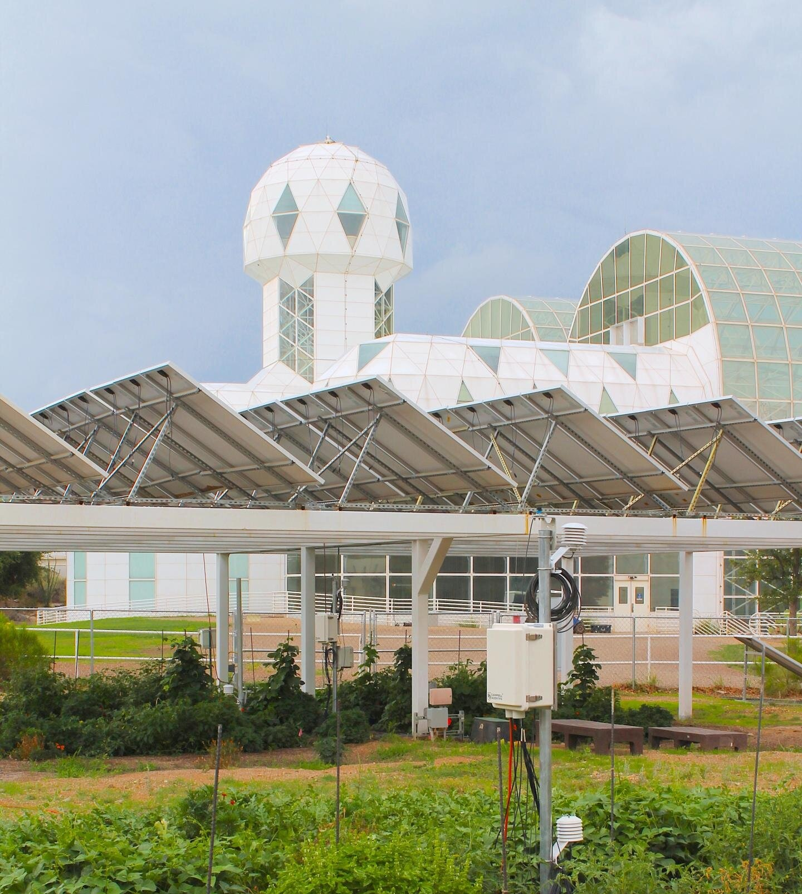
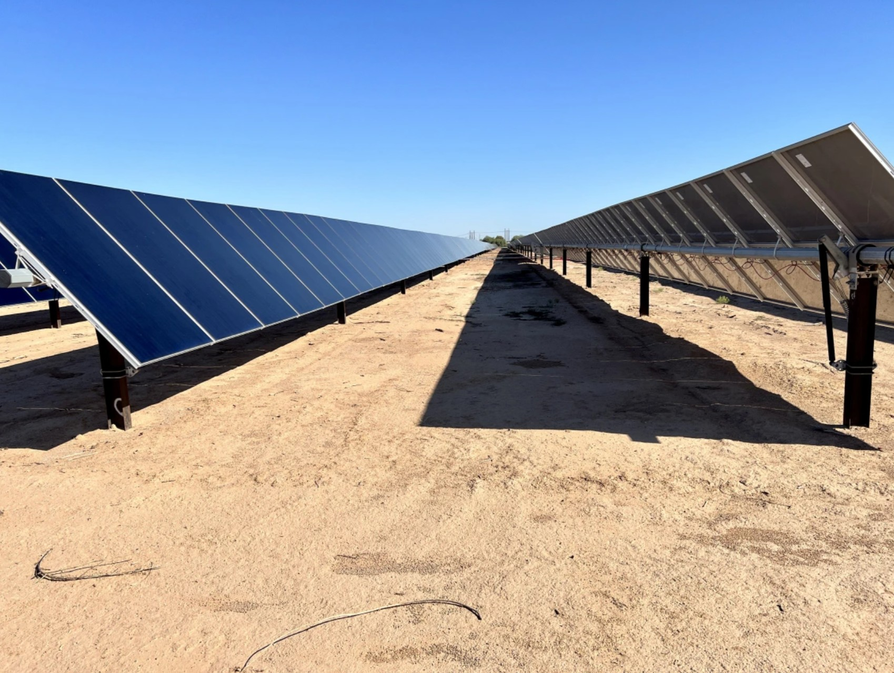
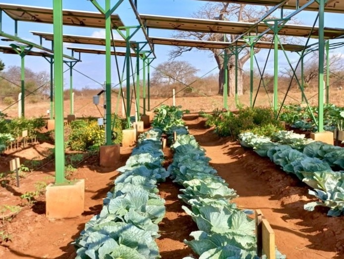

Global Agrivoltaic Learning Labs
Interactive map showcasing SALSA's key research and collaboration sites for agrivoltaics across the globe.
Arizona (USA) Research Sites
Biosphere 2 Agrivoltaics Research Laboratory
Biosphere 2 hosts our Agrivoltaic Learning Lab -- a 30 kW array 3 m (≈9 ft) above test plots. Established in 2017, this was the first U.S. dryland agrivoltaics experimental sites.[Biosphere 2][AgriSolar]

AZ Utility-scale Agrivoltaics Learning Lab
Building on the Biosphere 2 success, the team responded to a call for proposals from the US Dept of Energy asking for Foundational Agrivoltaic Research at the Megawatt Scale (FARMS). The team argued that the easiest way to scale-up agrivoltaics would be to reduce the burden on PV developers. They secured a $1.2 million award in 2023 to retrofit a 10 MW section of a functional PV facility in central Arizona—one of only six projects funded nationwide.[UA Grant][DOE FARMS]

Colorado (USA) Agrivoltaics Collaboration
Jack's Solar Garden & NREL InSPIRE Program
In Colorado, agrivoltaics research is carried out via a multi-institution consortium, primarily with Colorado State University (CSU) and the National Renewable Energy Laboratory (NREL).[NREL] Jack's Solar Garden is a 1.2 MW community solar farm with 3,276 panels that serves as a nationally recognized agrivoltaics showcase.[AgriSolar] Sprout City Farms supports farming activities at the site enabling the SALSA team to study 30+ crop types and varieties every growing season![Sprout City Farms]

Kenya Community Agrivoltaics
Makueni Community Agrivoltaics Learning Lab
Launched in July 2023, our agrivoltaics site is the first in Kenya intentionally built within a community to be operated by and provide food for the community. The project is on the grounds of St. Patrick's Ng'omano Primary School in Kibwezi East, Makueni County.[Makueni Gov] The elevated PV canopy drives a solar-pump and 15 kWh battery micro-grid that supplies irrigation water, classroom lighting and refrigeration for the school while exporting surplus power to nearby homes.[Makueni News 2025][WRI] Extension officers report that 252 households now draw solar-pumped water for vegetables such as kale, spinach and amaranth, replacing costly diesel pumps.[KNA] Shade from the panels lowers canopy temperatures by up to 5 °C and halves evapotranspiration, boosting yields in this semi-arid climate.[CIFOR][Energy Conv Manage] The pilot underpins a green-energy roadmap that commits Makueni to solar-power all new water projects and scale agrivoltaics across arid counties by 2035.[Green Energy Plan][NREL] The project is funded by the Kasser Joint Institute for Food, Water & Energy Security.

Israel Agrivoltaics Research
Arava Desert Initiatives
In Israel's southern Arava Valley, the Kasser Joint Institute and the Arava Institute partner with the University of Arizona to pioneer agrivoltaic systems for extreme desert farming.[KJI] Pilot plots at Kibbutz Ketura's solar park—established in 2020—combine fixed-tilt and tracking PV canopies over vegetables and forage, recording up to 50 % cuts in irrigation demand and cooler midday leaf temperatures without yield loss.[Arava Report] These findings echo UArizona desert trials that doubled tomato yields and boosted water-use efficiency by 65 %, highlighting agrivoltaics' promise for hyper-arid regions.[UA News]

Morocco Agrivoltaics Collaboration
Green Energy Park and North African Initiatives
SALSA V partners with the Green Energy Park (GEP) in Ben Guerir—jointly run by IRESEN and Mohammed VI Polytechnic University (UM6P)—to build the first replicated agrivoltaics platform in North Africa.[GEP][UM6P News] A fixed-tilt chess-board canopy was installed on UM6P's experimental farm in 2023 to test cereals and vegetables under semi-arid conditions, following a design study presented at the 2023 Maghreb PV conference.[Design Paper][AV Program] Early monitoring shows 20 % lower canopy temperatures, 30 % irrigation savings, and up to a 5 % PV efficiency gain from evaporative cooling.[ACAP Slides]

Mexico Agrivoltaics Initiatives
PASE Project and Northern Mexico Research
Mexico's first full agrivoltaics pilot—the Parcela Agrovoltaica Sostenible y Educacional (PASE)—was inaugurated in 2022 at UNAM-FMVZ's Topilejo farm in Mexico City, in alliance with UArizona and SECTEI.[UNAM Global][Gaceta UNAM] The 72-panel array powers a 145 m³ rain-harvest system and has cut irrigation water by up to 80 %, while maintaining crop yields.[PASE Report] Climate Scorecard highlights PASE as a model for land-use efficiency, citing potential 60 % gains when food and energy are co-produced.[Climate Scorecard] Additional feasibility studies in Sonora and Baja California—supported by Dutch-Mexican Topsector AgriFood—outline pilot networks aimed at arid-land farmers.[Topsector Study]